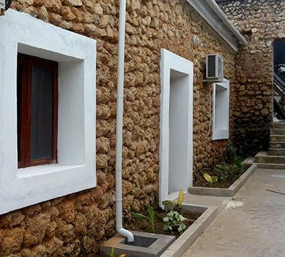
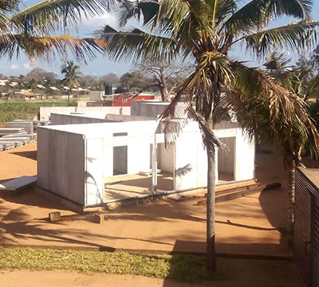

soluções, resultados, qualidade
Construção à sua medida
construção
reabilitação
pré-fabricados
obra civil
Resposta às suas necessidades
Kingman Construtora sediada em Pemba, Moçambique, desde 2012 trabalha em obras e projectos para diversos clientes nos principais segmentos de mercado, que englobam Instituições Religiosas, Energia – Oil & Gas, Serviços de Logística, Hotelaria, Banca, Educação, Fundos de investimento e particulares.
Know How
A nossa vasta experiência na área conta com mais de 20 anos a exercer esta actividade em Espanha. A nossa equipa inclui uma divisão técnica responsável pela elaboração de novos projectos e uma divisão de execução de obra, prestando um serviço integral desde o desenho de projecto à execução e finalização da obra.